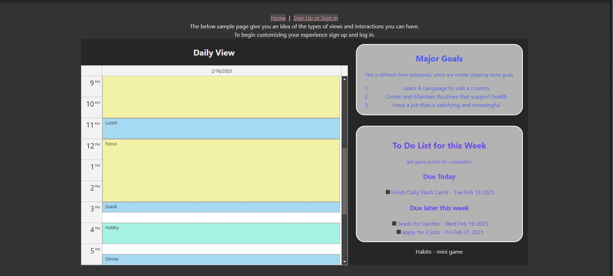

Projects
you can see more by checking out my GitHub

View Project
Deployed Backend
Go to GitHub Repository for backend
Project 1: Calendar Website
A bullet journal inspired website that combines calendar, planning, and thought dumping functionality.
View ProjectView Project
Deployed Backend
Go to GitHub Repository for backend

Project 2: Portfolio Website
A personal portfolio website showcasing my skills and projects.
View ProjectProject 3: Task Management App
A task management app built with JavaScript, featuring real-time task updates.
View Project